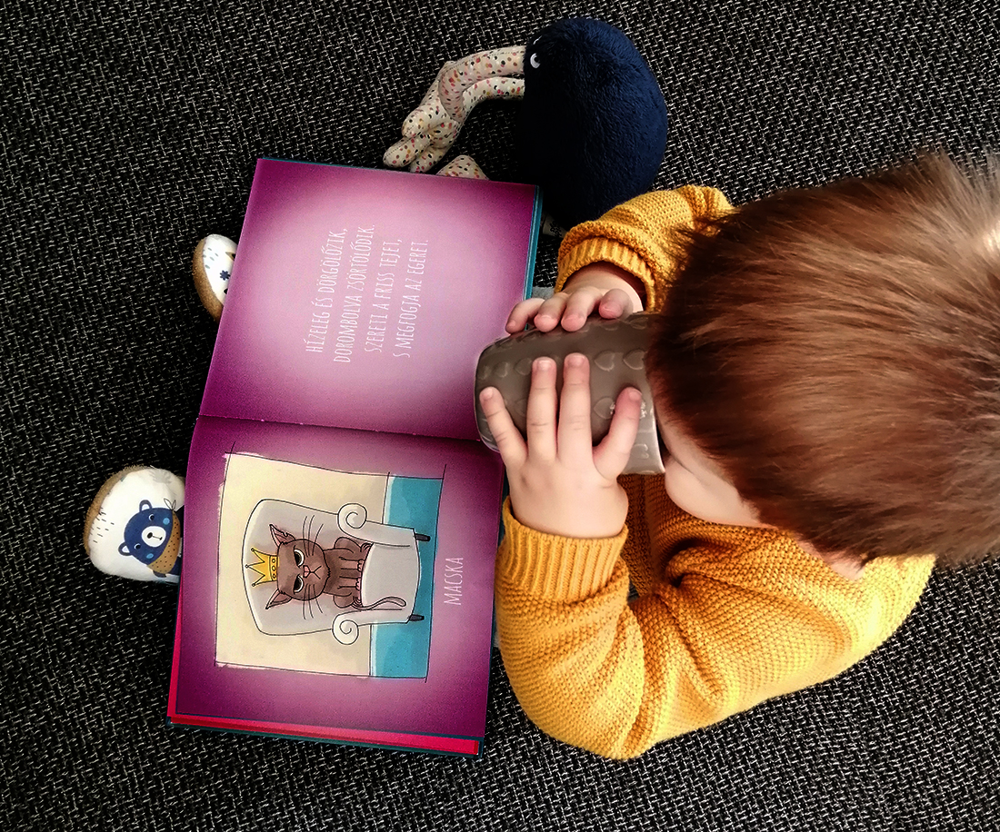
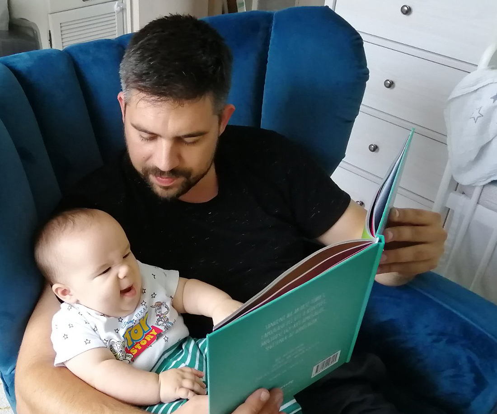
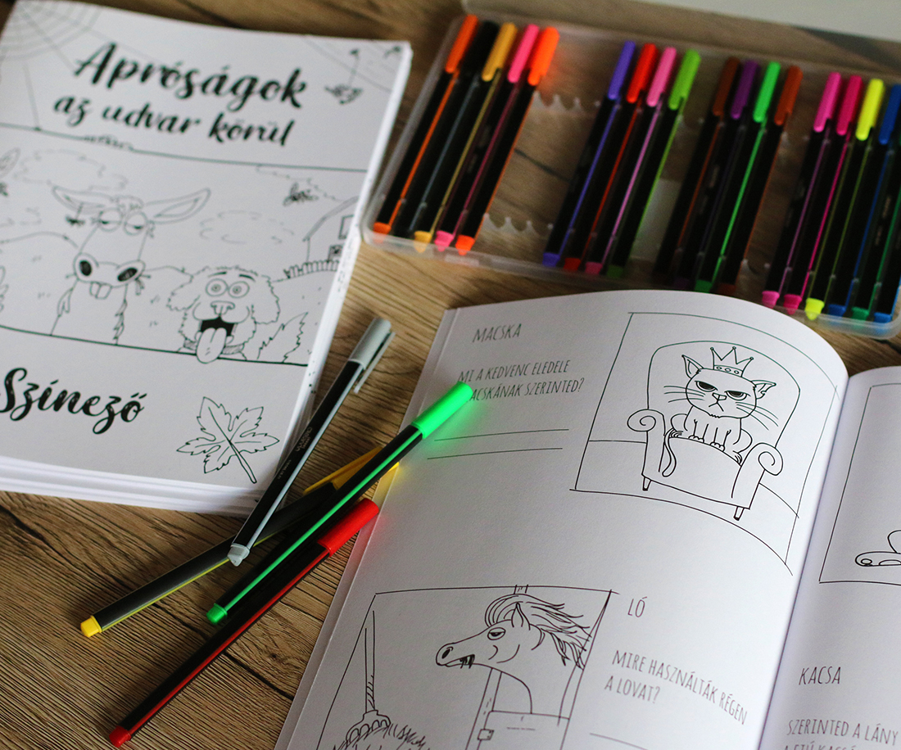
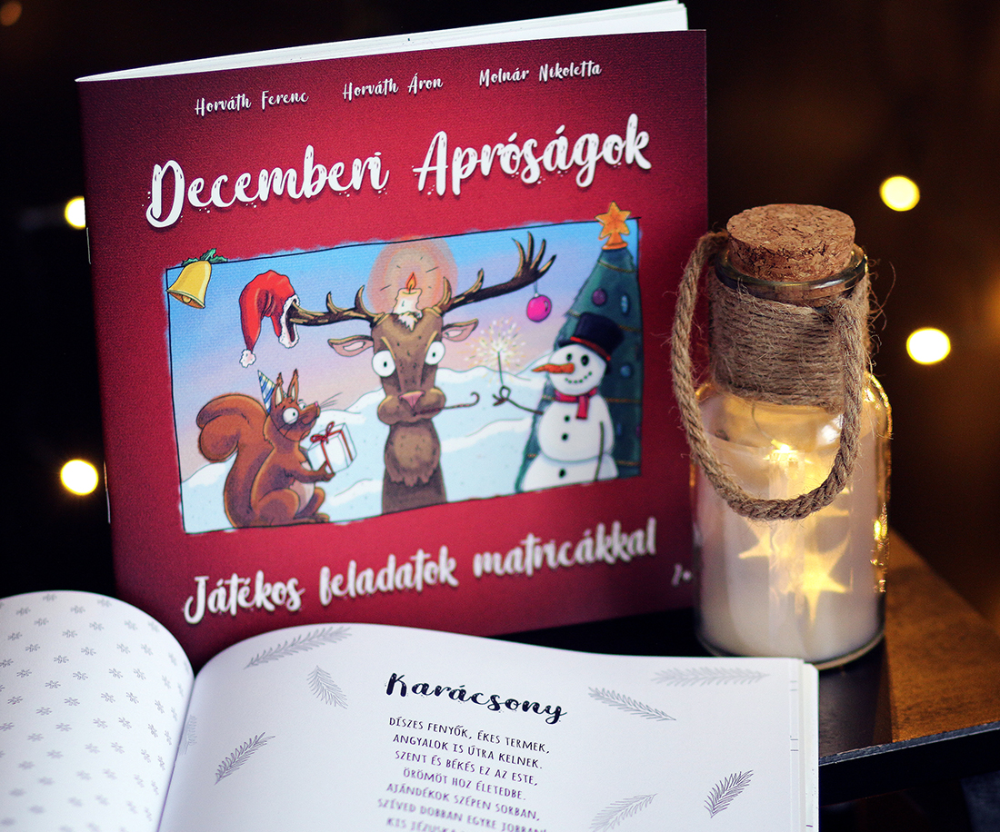

<div class="special-page-container">
  <div class="special-container">
    <div class="title">Mitől különlegesek az Apróság könyvek?</div>
    <div class="paragraphs">
      <div class="paragraph">
        <div class="text-container">
          <div class="subtitle">Apróság könyvek</div>
          <div>
            <p>Az Apróság Könyvek minden eddig megjelent kötete, színezője vagy bármelyik kiegészítője roppant
              odafigyeléssel és szeretettel készült a gyermekeknek. Mindhárman próbáltuk legjobb tudásunk és a
              gyereknevelésből származó (kisebb-nagyobb) tapasztalatunk szerint létrehozni a verseket vagy akár a
              képeket.</p>
            <p>Célunk mindvégig az volt, hogy a szórakoztatás mellett tanítsanak is vagy éppen fejlesszék a
              legkisebbek különböző készségeit.</p>
            <p>A nagyobb élmény elérése végett pedig a színezőinket, az ingyenesen letölthető készségfejlesztő
              játékainkat, foglalkoztató füzetünket mind-mind úgy készítettük el, hogy ne csak külön-külön, de
              együtt is használhatók legyenek.</p>
            <p>Ha pedig már nagyobbak lesznek a gyerekek és szinte kívülről ismerik már a könyvet, barkóba
              játszására is tökéletesen megfelelnek, hiszen egyik versünk sem foglalja magába az állat nevét, amiről
              szól!</p>
          </div>
        </div>
        <div class="image-container">
          
        </div>
      </div>

      <div class="paragraph">
        <div class="image-container">
          
        </div>
        <div class="text-container">
          <div class="subtitle">Miért jó, ha verset olvasunk a gyerekeknek?</div>
          <div>
            <p>A versolvasás pici kortól fejleszti a beszédfejlődést. Bővíti a szókincset, ritmikussága miatt
              megkönnyíti anyanyelvünk elsajátítását. A rímek bizonyítottan jó hatással vannak a megkésett
              beszédfejlődésre.</p>
            <p>Mindkét eddig megjelent könyvünkben 40 db állatokról szóló kis versecske található. Maga a könyv
              ezáltal hosszúnak tűnhet esti meseolvasáshoz, mivel több mint 80 oldalas képekkel együtt. Viszont a
              versek rövidsége miatt könnyen fogyasztható már kisbaba kortól is.</p>
          </div>
        </div>
      </div>
      <div class="button-container">
        <button class="button" routerLink="/items">Szeretnék egyet</button>
      </div>


      <div class="paragraph">
        <div class="text-container standalone">
          <div class="subtitle">Miért jók a színezőink?</div>
          <div>
            <p>Mindkét kötetünkhöz készítettünk színezőket is amikben a könyvben található rajzokat festhetik ki a
              gyerekek kedvükre. A képek mellett minden állatról egy-egy kérdés található, amikre a választ van,
              hogy a könyvben szereplő versekből találhatják ki a gyerekek, de van, hogy saját képzelőerejükre lesz
              szükségük. Akár a szülök segítségével is remek szórakozást nyújthat minden kisgyermek számára.</p>
          </div>
        </div>
      </div>

      <div class="standalone-image-container">
        
      </div>

      <div class="button-container">
        <button class="button" routerLink="/items/Ynq7vrDI0qORP0VWcvX0">Megnézem</button>
      </div>

      <div class="paragraph">
        <div class="text-container">
          <div class="subtitle">Mitől egyedi a foglalkoztató füzetünk?</div>
          <div>
            <p>Karácsonyra szerettük volna meglepni követőinket egy limitált kiadású, kreatív füzettel, így született
              meg a Decemberi Apróságok.</p>
            <p>A három decemberi ünnepet foglalja magában, a Mikulást, a karácsonyt és a szilvesztert. Mindegyik
              ünnephez különböző játékos feladatokat készítettünk, hogy minél változatosabb legyen. Emellett
              szerettük volna, ha végre tudunk adni a gyerekek kezébe egy olyan foglalkoztatót, melyben a Mikulás
              nem a karácsonyi ajándékokat hozza, hanem a saját kis piros zsákját, december 6-án! A füzet
              közepében 2 oldalnyi matrica található, ugyanis jó pár feladathoz szükség van rájuk. Feri papa
              gyönyörű versei olvashatók minden ünnep előtti részen, lezárásként pedig három kivágható
              meglepetés várja a gyerekeket. Minden oldal fekete-fehérben van kinyomtatva (kivéve a matricákat),
              ez lehetővé teszi, hogy a feladatok megoldása után ki is színezhessék a rajzokat a gyerekek.</p>
          </div>
          <div class="button-container">
            <button class="button" routerLink="/items/sggb8hm2YzbKqtN4zPcV">További info</button>
          </div>
        </div>
        <div class="image-container">
          
        </div>
    </div>

  </div>
</div>
